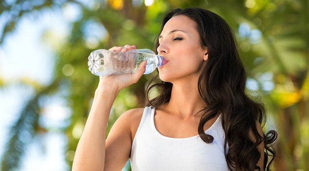

Sobre nós
Nos últimos 11 anos já ajudou mais de 2 milhões de pessoas a transformar suas vidas, melhorando a qualidade de vida. O Programa Be Health é científico e propõe Transformação Nutricional Consciente. Inclui exclusivas sessões de Transformação e sessões de Nutrição, além de Estética de Resultado e acompanhamento contínuo. Com resultados comprovados e modelo inteligente de gestão, a Be Health se consagrou como franquia de sucesso e hoje possui a maior rede do segmento, além do maior centro de capacitação de profissionais da América Latina.
